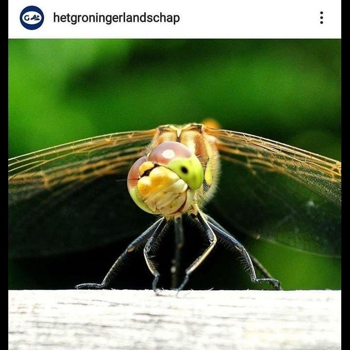
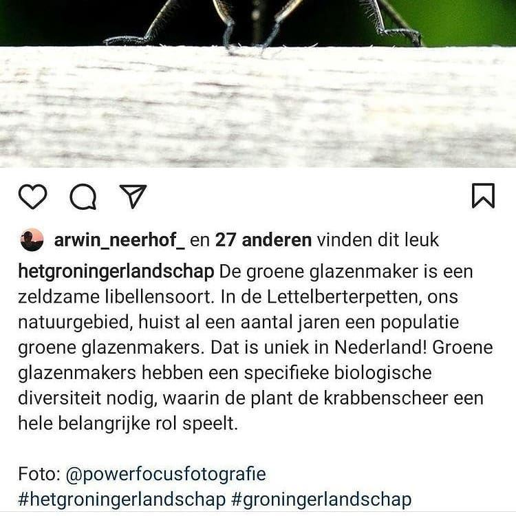

Bruinrode heidelibel, geen groene glazenmaker
5 april 2021 · Het Groninger Landschap
- Op de foto
- Bruinrode heidelibel
- Het ging over
- Groene glazenmaker


Beste @hetgroningerlandschap, de groene glazenmaker is inderdaad een zeldzame soort. In tegenstelling tot de Bruinrode heidelibel die op de foto staat. Even aanpassen? 😉